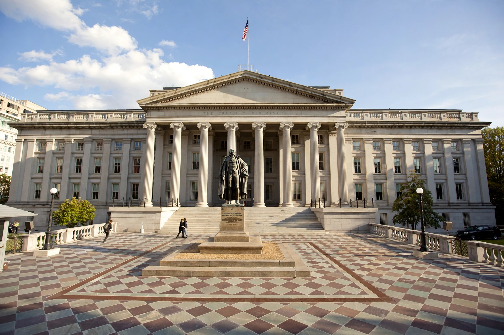

The United States Department of the Treasury is the national treasury and finance department of the federal government of the United States, an executive department responsible for promoting economic prosperity and ensuring the financial security of the country.
Congress established the department in 1789, and Alexander Hamilton became its first secretary, establishing a national bank, a system of tariffs, and the funding of the federal debt.
The Treasury manages federal finances, collects taxes through the Internal Revenue Service under the Internal Revenue Code, pays government bills, issues currency and bonds, supervises banks, and advises the president on economic and fiscal policy. See Taxation in the United States.
Bureaus include the IRS, the Bureau of the Fiscal Service, the Financial Crimes Enforcement Network (FinCEN), the Office of Foreign Assets Control (OFAC), which administers sanctions, and the United States Mint.